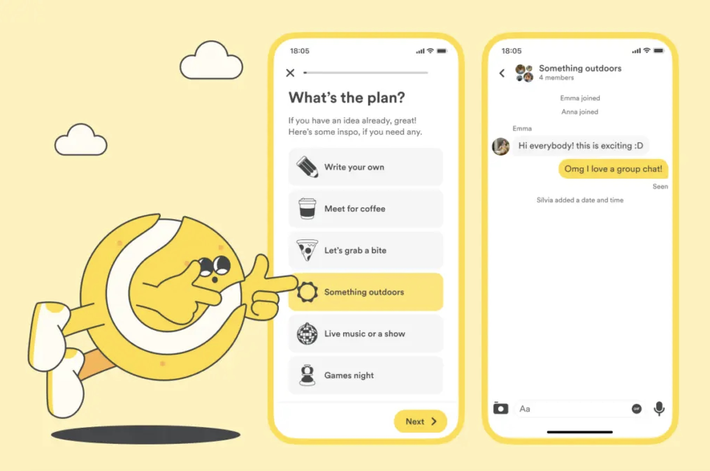
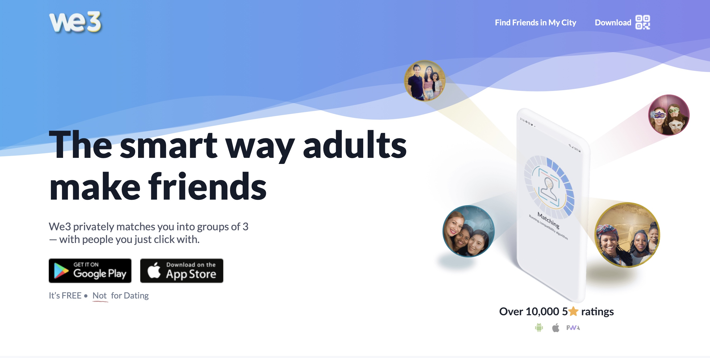
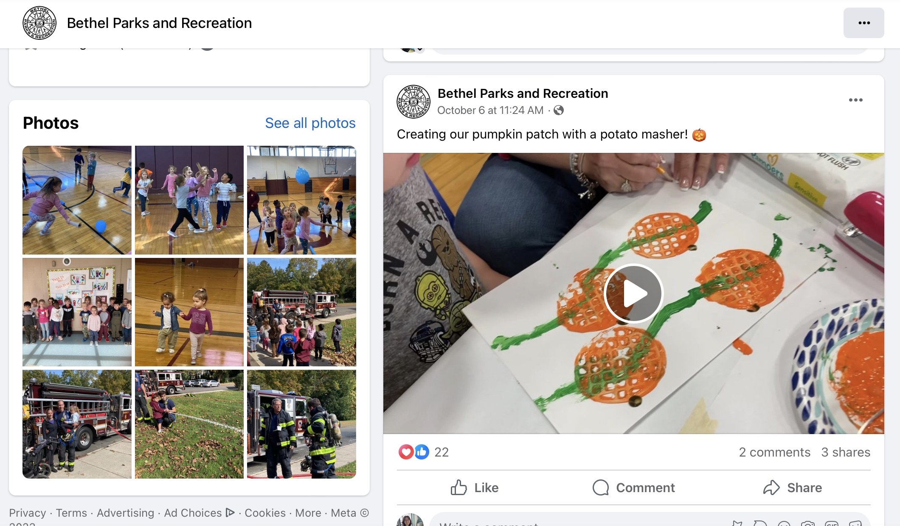
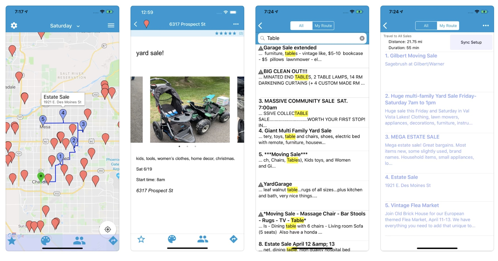
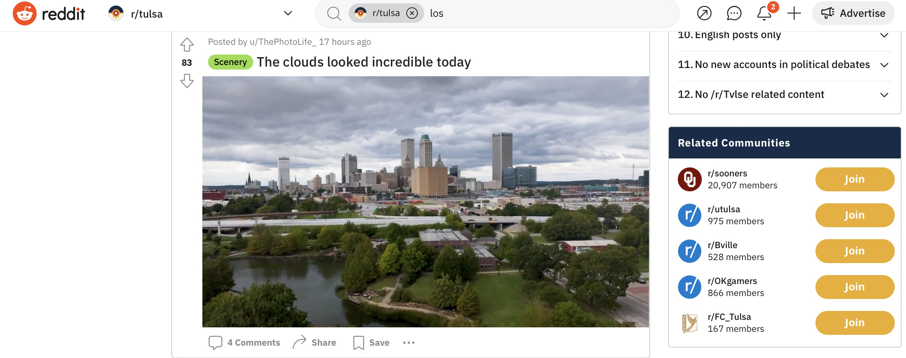

Bumble For Friends, Meetup.com, Peanut, Yubo.com, Instagram, Snapchat, Whatsapp, WeChat, We3, Googles Maps, All Events, Town Social Organizations, Reddit, Yard Sale App
Helen Bauer

Our idea was for a friend app for individuals who have relocated to
specifically a new small city for work (i.e. Tulsa, OK), so we chose
Bumble BFF as an inspirational product.
The service integrates the interests of people, some inspirations of
activities to do, and creates a group chat where they can connect with one
another. The design elements are good because it is very straightforward
on the basic questions, however because it is also known as a dating app,
we wanted to move away from the dating app scene.
Additionally, another aspect we thought about was the fact that there’s an
inspiration for plans/activities, but there are no locations for such
activities given to the people (i.e. tripadvisor/yelp) and/or connections
with local companies.
An element to borrow is the simplistic questions to determine the groups
because the algorithm is easier, but also streamlines the users’
experience. However, there will be an additional element that helps them
actually implement the plan (location of event, connection to local
events, etc.) to make it all in one.
Isa de Luis

We3 is a friend app that is structured like a dating app, however, instead
of pairing you with one person, it pairs you with two. This alleviates the
stress of having to make 1-on-1 conversation and removes the awkwardness
of having to continuously make conversation with someone you just met.
Additionally, We3 claims it’s “safer” than the 1-on-1 friend making apps
because you’re matched in groups and you don’t have to worry about
people’s ulterior motives. We3 ask you a bunch of questions to get a
profile on you and use social science and AI to match you with people who
are compatible with you. We3 also allows you to prevent friends already in
your contacts from seeing you and your profile is kept private from anyone
you’re not compatible with.
All of these features are ones we can include in our product. Firstly,
pairing people in groups of 3 is something we can consider for our
product, since typically people feel more comfortable in groups, however,
we can try and be inclusive to all people by letting folks choose their
preferred group size. Additionally, making everyone’s profile private on
default can let our users have peace of mind that their profile won’t be
shown to anyone other than people they’re pursuing a friendship with.
Finally, we can use the feature that allows you to present friends already
in your contacts from seeing you, because users might want to break out of
their current bubble by making friends outside of it.
Sela Domkofski

Parks and Rec is an official organization in my small hometown that was
around throughout my childhood and still very active today. The goal of
this organization is very similar to what we’re hoping to achieve with our
product- connecting people to improve their quality of life- though its
focus is more on creating community within the town. It mainly operates
with paper resources (bulletin boards in public areas, flyers, etc.) to
spread the word about events being held in town. Members of the community
can go through Parks and Rec to request use of public spaces (like the
library, school gyms, sports fields, parks, etc.) to host social events.
Often these events are targeted specifically at either children, families,
or adults (it also manages the town youth sports teams). It also uses its
social media presence to promote events and discounts to encourage traffic
to small, local businesses in town.
Our app can take what the Parks and Rec office does, creating local events
and social activities, and make it tons easier for the everyday person to
organize something. Parks and Rec has aged systems as an established
office, needing people to fill out go to their office to register for many
things and fill out forms. Also, the most online presence the office has
is their facebook page
([Facebook](https://www.facebook.com/people/Bethel-Parks-and-Recreation/100057381523314/)),
meaning it’s hard to know anything about the events going on if you’re not
regularly going through public buildings like the post office or library
with their physical posters for events.
The foundations for connecting people in a community through social events
are already laid out- but our app can help transition the process to be
entirely accessible online with a low level of engagement to be in the
know and create your own new connections and events.
Lily Jiang

Yard Sale is a mobile app to view yard sale events. It includes a map of
your nearby location, and markers to indicate where events are occurring
and what their details are. Users can also post their own events.
The flow of the app is a good inspiration because you open the app and
immediately see events near you. You can also choose the day of the week
you’re looking for, so events can be posted days in advance for people who
like planning ahead. Overall it’s a really great execution of a
community-driven way to display events to a large group of people with a
specific interest.
Daniel Quinteros
Many Reddit communities are location based, meaning that they have specific communities created for people that live in specific places (e.g. r/LosAngeles for people that live in Los Angeles). These online communities help people to stay up to date with planned events, news, and general discussions within the community. Regular users can make posts to the entire community, while moderators of the community can ensure the online group stays civil and organized. You can also filter by types of posts so you can see only what you’re interested in seeing (e.g. news, events, etc). Larger events can stay pinned at the top of the community feed so that everyone in the community sees it.